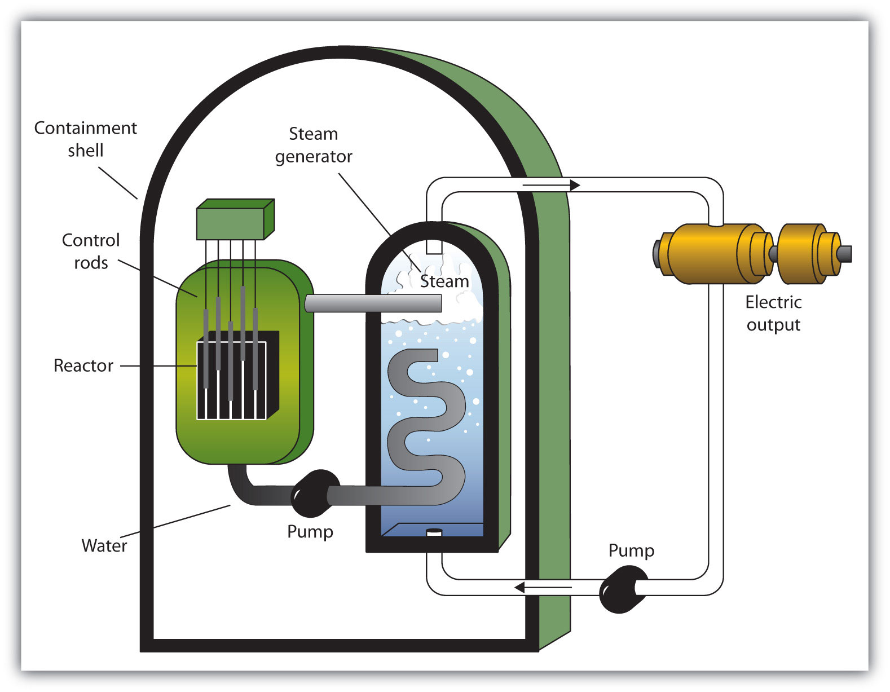

Nuclear changes occur with a simultaneous release of energy. Where does this energy come from? If we could precisely measure the masses of the reactants and the products of a nuclear reaction, we would notice that the amount of mass drops slightly in the conversion from reactants to products. Consider the following nuclear reaction, in which the molar mass of each species is indicated to four decimal places:
If we compare the mass of the reactant (235.0439) to the masses of the products (sum = 234.8605), we notice a mass difference of −0.1834 g, or −0.0001834 kg. Where did this mass go?
According to Albert Einstein’s theory of relativity, energy (E) and mass (m) are related by the following equation:
E = mc2where c is the speed of light, or 3.00 × 108 m/s. In the course of the uranium nuclear chemical reaction, the mass difference is converted to energy, which is given off by the reaction:
E = (−0.0001834 kg)(3.00 × 108 m/s)2 = −1.65 × 1013 J = −1.65 × 1010 kJThat is, 16.5 billion kJ of energy are given off every time 1 mol of uranium-235 undergoes this nuclear reaction. This is an extraordinary amount of energy. Compare it to combustion reactions of hydrocarbons, which give off about 650 kJ/mol of energy for every CH2 unit in the hydrocarbon—on the order of hundreds of kilojoules per mole. Nuclear reactions give off billions of kilojoules per mole.
If this energy could be properly harvested, it would be a significant source of energy for our society. Nuclear energyThe controlled harvesting of energy from fission reactions. involves the controlled harvesting of energy from fission reactions. The reaction can be controlled because the fission of uranium-235 (and a few other isotopes, such as plutonium-239) can be artificially initiated by injecting a neutron into a uranium nucleus. The overall nuclear equation, with energy included as a product, is then as follows:
235U + 1n → 139Ba + 94Kr + 31n + energyThus, by the careful addition of extra neutrons into a sample of uranium, we can control the fission process and obtain energy that can be used for other purposes.
Artificial or induced radioactivity was first demonstrated in 1934 by Irène Joliot-Curie and Frédéric Joliot, the daughter and son-in-law of Marie Curie.
Plutonium-239 can absorb a neutron and undergo a fission reaction to produce an atom of gold-204 and an atom of phosphorus-31. Write the balanced nuclear equation for the process and determine the number of neutrons given off as part of the reaction.
Solution
Using the data given, we can write the following initial equation:
In balanced nuclear equations, the sums of the subscripts on each sides of the equation are the same, as are the sums of the superscripts. The subscripts are already balanced: 0 + 94 = 94 and 79 + 15 = 94. The superscripts on the left equal 240 (1 + 239) but equal 235 (204 + 31) on the right. We need five more mass number units on the right. Five neutrons should be the products of the process for the mass numbers to balance. (Because the atomic number of a neutron is zero, including five neutrons on the right does not change the overall sum of the subscripts.) Thus, the balanced nuclear equation is as follows:
We predict that the overall process will give off five neutrons.
Uranium-238 can absorb a neutron and undergo a fission reaction to produce an atom of cesium-135 and an atom of rubidium-96. Write the balanced nuclear equation for the process and determine the number of neutrons given off as part of the reaction.
A nuclear reactorAn apparatus designed to carefully control the progress of a nuclear reaction and extract the resulting energy for useful purposes. is an apparatus designed to carefully control the progress of a nuclear reaction and extract the resulting energy for useful purposes. Figure 11.5 "A Diagram of a Nuclear Power Plant for Generating Electricity" shows a simplified diagram of a nuclear reactor. The energy from the controlled nuclear reaction converts liquid water into high-pressure steam, which is used to run turbines that generate electricity.
Figure 11.5 A Diagram of a Nuclear Power Plant for Generating Electricity
The two main components of the power plant are the nuclear reactor itself and the steam-driven turbine and electricity generator.
Notice that the fission of uranium produces two more free neutrons than were present to begin with. These neutrons can themselves stimulate other uranium nuclei to undergo fission, releasing yet more energy and even more neutrons, which can in turn induce even more uranium fission. A single neutron can thus begin a process that grows exponentially in a phenomenon called a chain reactionAn exponential growth in a process.:
1 → 2 → 4 → 8 → 16 → 32 → 64 → 128 → 256 → 512 → 1,024 → 2,048 → 4,096 → 8,192 → 16,384 →…Because energy is produced with each fission event, energy is also produced exponentially and in an uncontrolled fashion. The quick production of energy creates an explosion. This is the mechanism behind the atomic bombA weapon that depends on a nuclear chain reaction to generate immense forces..
The first controlled chain reaction was achieved on December 2, 1942, in an experiment supervised by Enrico Fermi in a laboratory underneath the football stadium at the University of Chicago.
Although fairly simple in theory, an atomic bomb is difficult to produce, in part because uranium-235, the isotope that undergoes fission, makes up only 0.7% of natural uranium; the rest is mostly uranium-238, which does not undergo fission. (Remember that the radioactive process that a nucleus undergoes is characteristic of the isotope.) To make uranium useful for nuclear reactors, the uranium in uranium-235 must be enriched to about 3%. Enrichment of uranium is a laborious and costly series of physical and chemical separations. To be useful in an atomic bomb, the uranium in uranium-235 must be enriched to 70% or more. At lesser concentrations, the chain reaction cannot sustain itself, so no explosion is produced.
FusionA nuclear process in which small nuclei are combined into larger nuclei, releasing energy. is another nuclear process that can be used to produce energy. In this process, smaller nuclei are combined to make larger nuclei, with an accompanying release of energy. One example is the hydrogen fusion, which makes helium. While the steps of the process are complicated, the net reaction is:
41H → 4He + 2.58 × 1012 JNotice that the amount of energy given off per mole of reactant is only a fraction of the amount given off by the fission of 1 mol of uranium-235. On a mass (per gram) basis, however, the hydrogen fusion emits many times more energy than fission does. In addition, the product of fission is helium gas, not a wide range of isotopes (some of which are also radioactive) produced by fission.
The practical problem is that to perform fusion, extremely high pressures and temperatures are necessary. Currently, the only known stable systems undergoing fusion are the interiors of stars. The conditions necessary for fusion can be created using an atomic bomb, but the resulting fusion is uncontrollable (and the basis for another type of bomb, a hydrogen bomb). Currently, researchers are looking for safe, controlled ways of producing useful energy using fusion.
Generally speaking, a radiological technician deals with X ray equipment and procedures. A nuclear medicine technologist has similar responsibilities, using compounds containing radioactive isotopes to help diagnose and treat disease.
Nuclear medicine technologists administer the substances containing the radioactive isotope and subsequently operate the apparatus that detects the radiation produced by radioactive decay. The apparatus may be as simple as a piece of photographic film or as complex as a series of computer-controlled electronic detectors. The images obtained by the technologist are interpreted by a specially trained physician.
One of the chief responsibilities of a nuclear medicine technologist is safety. Improper exposure to radioactivity can be harmful to both patient and technologist alike. Therefore, the technologist must adhere to strict safety standards to keep unnecessary exposure as low as possible. The technologist must also know how to dispose of waste materials safely and appropriately.
How is nuclear energy produced?
What is the difference between fission and fusion?
Nuclear energy is produced by carefully controlling the speed of a fission reaction.
In fission, large nuclei break down into small ones; in fusion, small nuclei combine to make larger ones. In both cases, a lot of energy is emitted.
In the spontaneous fission of uranium-233, the following reaction occurs:
233U + 1n → 142Ce + 82Se + 101nFor every mole of 233U that decays, 0.1355 g of mass is lost. How much energy is given off per mole of 233U reacted?
In the spontaneous fission of plutonium-241, the following reaction occurs:
241Pu + 1n → 104Ru + 124Sn + 141nFor every mole of 241Pu that decays, 0.1326 g of mass is lost. How much energy is given off per mole of 241Pu reacted?
The two rarer isotopes of hydrogen—deuterium and tritium—can also be fused to make helium by the following reaction:
2H + 3H → 4He + 1nIn the course of this reaction, 0.01888 g of mass is lost. How much energy is emitted in the reaction of 1 mol of deuterium and tritium?
A process called helium burning is thought to occur inside older stars, forming carbon:
34He → 12CIf the reaction proceeds with 0.00781 g of mass lost on a molar basis, how much energy is given off?
Briefly describe how a nuclear reactor generates electricity.
Briefly describe the difference between how a nuclear reactor works and how a nuclear bomb works.
What is a chain reaction?
Why must uranium be enriched to supply nuclear energy?
1.22 × 1013 J
1.70 × 1012 J
A nuclear reactor generates heat, which is used to generate steam that turns a turbine to generate electricity.
A chain reaction is an ever-expanding series of processes that, if left unchecked, can cause a runaway reaction and possibly an explosion.